| |
||||||||||||||||||||||||||||||||||||||||||||||||||||||||||||||||||||||||||||||||||||||||||||||||
代码组及其含义
|
| 代码解释 |
| G00 定位 |
1. 格式 G00 X_ Y_ Z_ 这个命令把刀具从当前位置移动到命令指定的位置 (在绝对坐标方式下)， 或者移动到某个距离处 (在增量坐标方式下)。 2. 非直线切削形式的定位 我们的定义是：采用独立的快速移动速率来决定每一个轴的位置。刀具路径不是直线，根据到达的顺序，机器轴依次停止在命令指定的位置。 3. 直线定位 刀具路径类似直线切削(G01) 那样，以最短的时间（不超过每一个轴快速移动速率）定位于要求的位置。 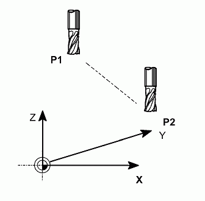 4. 举例 N10 G0 X100 Y100 Z65 |
| G01 直线切削进程 |
1. 格式 G01 X_ Y_ Z_F_ 这个命令将刀具以直线形式按Ｆ代码指定的速率从它的当前位置移动到命令要求的位置。对于省略的坐标轴，不执行移动操作；而只有指定轴执行直线移动。位移速率是由命令中指定的轴的速率的复合速率。 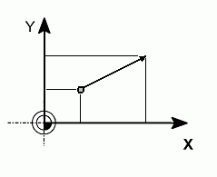 2. 举例 G01 G90 X50. F100; 或 G01 G91 X30. F100; G01 G90 X50. Y30. F100; 或 G01 G91 X30. Y15. Z0 F100; G01 G90 X50. Y30. Z15. F100; |
| G02/G03G17/G18/G19 圆弧切削 (G02/G03, G17/G18/G19) |
1. 格式 圆弧在 XY 面上 G17 G02 ( G03 ) G90 ( G91 ) X_ Y_ F_; 或 G17 G02 ( G03 ) G90 ( G91 ) I_ J_ F_; 或 G17 G02 ( G03 ) G90 ( G91 ) R_ F_; 圆弧在 XZ 面上 圆弧在 YZ 面上 圆弧所在的平面用G17, G18
和G19命令来指定。但是，只要已经在先前的程序块里定义了这些命令，也能够省略。圆弧的回转方向像下图表示那样，由
G02/G03来指定。在圆弧回转方向指定后，指派切削终点坐标。 G90 是指定在绝对坐标方式下使用此命令；而 G91
是在指定在增量坐标方式下使用此命令。另外，如果G90/G91已经在先前程序块里给出过，可以省略。圆弧的终点用包含在命令施加的平面里的两个轴的坐标值指定
( 例如，在 XY平面里，G17用 X, Y 坐标值 ) 。 终点坐标能够像 G00 和 G01
命令一样地设置。圆弧中心的位置或者其半径应当在设定圆弧终点之后设置。圆弧中心设置为从圆弧起点的相对距离，并且对应于 X，Y 和Z
轴表示为 I, J 和 K。圆弧起点坐标值减去圆弧中心对应的坐标值得到的结果对应分配给 I、J、K。 |

| G28/G30 自动原点返回 (G28, G30) |
1. 格式 第一原点返回： G28 G90 ( G91 ) X_Y_Z_; 第二、三和四原点返回： G30 G90 ( G91 ) P2 ( P3, P4 ) X_Y_Z_; #P2, P3, P4: 选择第二、第三和第四原点返回 ( 如果被省略，系统自动选择第二原点返回 ) 由 X, Y 和 Z 设定的位置叫做中间点。机床先移动到这个点，而后回归原点。省略了中间点的轴不移动；只有在命令里指派了中间点的轴执行其原点返回命令。在执行原点返回命令时，每一个轴是独立执行的，这就像快速移动命令（G00）一样； 通常刀具路径不是直线。因此，要求对每一个轴设置中间点，以免机床在原点返回时与工件碰撞等意外发生。 2. 举例 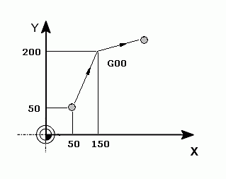 G28 (G30) G90 X150. Y200.; 或者， G28 (G30) G91 X100. Y150.; 注意：在所给例子里， 去中间点的移动就像下面的快速移动命令一样。 G00 G90 X150. Y200.; 或者 G00 G91 X100. Y150.; 如果中介点与当前的刀具位置一致（例如，发出的命令是 - G28 G91 X0 Y0 Z0;），机床就从其当前位置返回原点。如果是在单程序块方式下运行，机床就会停在中间点；当中间点与当前位置一致，它也会暂时停在中间点（即，当前位置）。 |
| G40/G41/G42 刀具直径偏置功能 (G40/G41/G42) |
1. 格式 G41 X_ Y_; G42 X_ Y_; 当处理工件 (“A”) 时，就像下图所示，刀具路径 (“B”) 是基本路径，与工件
(“A”)的距离至少为该刀具直径的一半。此处，路径 “B” 叫做由 A 经 R
补偿的路径。因此，刀具直径偏置功能自动地由编程给出的路径
A以及由分开设置的刀具偏置值，计算出补偿了的路径B。就是说，用户能够根据工件形状编制加工程序，同时不必考虑刀具直径。
因此，在真正切削之前把刀具直径指派为刀具偏置值；用户能够获得精确的切削结果，就是因为系统本身计算了精确的补偿了的路径。 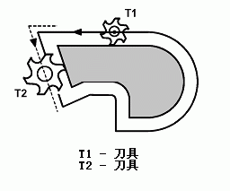
|
| G43/G44/G49 刀具长度偏置 (G43/G44/G49) |
1. 格式 G43 Z_ H_; G44 Z_ H_; G49 Z_; 2. 偏置功能 为了防止出现这种情况，把每一把刀具与基准刀具的相对长度差输入到刀具偏置内存，并且在程序里让 NC
机床执行刀具长度偏置功能。 3. 举例
|
| G53 选择机床坐标系 (G53) |
1. 格式 ( G90 ) G53 X_ Y_ Z_; 2. 功能 刀具根据这个命令执行快速移动到机床坐标系里的 X_Y_Z 位置。由于 G53 是 “一般” G 代码命令，仅仅在程序块里有 G53 命令的地方起作用。 此外，它在绝对命令 (G90) 里有效，在增量命令里 (G91) 无效。为了把刀具移动到机床固有的位置，像换刀位置，程序应当用 G53 命令在机床坐标系里开发。 注意 (1) 刀具直径偏置、刀具长度偏置和刀具位置偏置应当在它的 G53 命令指派之前提前取消。否则，机床将依照指派的偏置值移动。 注意 (2) 在执行G53指令之前，必须手动或者用G28 命令让机床返回原点。这是因为机床坐标系必须在G53命令发出之前设定。 |
| G54-G59 工件坐标系选择(G54-G59) |
1. 格式 G54 X_ Y_ Z_; 2. 功能 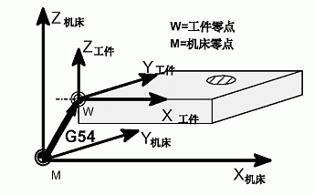 通过使用 G54 �C G59 命令，来将机床坐标系的一个任意点 (工件原点偏移值) 赋予 1221 �C 1226 的参数，并设置工件坐标系（1-6）。该参数与 G 代码要相对应如下： 工件坐标系 1 (G54) ---工件原点返回偏移值---参数 1221 工件坐标系 2 (G55) ---工件原点返回偏移值---参数 1222 工件坐标系 3 (G56) ---工件原点返回偏移值---参数 1223 工件坐标系 4 (G57) ---工件原点返回偏移值---参数 1224 工件坐标系 5 (G58) ---工件原点返回偏移值---参数 1225 工件坐标系 6 (G59) ---工件原点返回偏移值---参数 1226 在接通电源和完成了原点返回后，系统自动选择工件坐标系 1 (G54) 。在有 “模态”命令对这些坐标做出改变之前，它们将保持其有效性。 除了这些设置步骤外，系统中还有一参数可立刻变更G54~G59 的参数。工件外部的原点偏置值能够用 1220 号参数来传递。 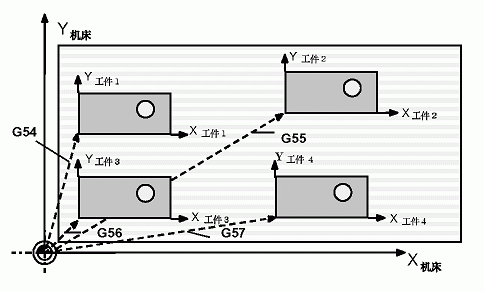 |
| G73 高速啄式深孔钻循环(G73) |
1. 格式 G73 X__Y__Z__R__Q__P__F__K__ X_ Y:孔位数据 Z_:从R点到孔底的距离 R_:从初始位置到R点的距离 Q_:每次切削进给的切削深度 P_:暂停时间 F_:切削进给速度 K_:重复次数 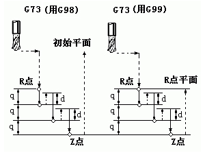 |
| G74 攻左牙循环(G74) |
1. 格式 G74 X__Y__Z__R__Q__P__F__K__ X_ Y:孔位数据 Z_:从R点到孔底的距离 R_:从初始位置到R点的距离 Q_:每次切削进给的切削深度 P_:暂停时间 F_:切削进给速度 K_:重复次数 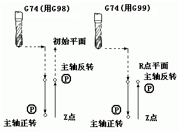 |
| G76 精镗孔循环(G76) |
1. 格式 G76 X__Y__Z__R__Q__P__F__K__ X_ Y:孔位数据 Z_:从R点到孔底的距离 R_:从初始位置到R点的距离 Q_:每次切削进给的切削深度 P_:暂停时间 F_:切削进给速度 K_:重复次数
|
| G 80 取消固定循环进程 (G80) |
1. 格式 G80; 2. 功能 这个命令取消固定循环方式，机床回到执行正常操作状态。孔的加工数据，包括 R 点， Z 点等等，都被取消；但是移动速率命令会继续有效。 (注) 要取消固定循环方式，用户除了发出G80 命令之外，还能够用 G 代码 01 组 (G00, G01, G02, G03 等等) 中的任意一个命令。 |
| G 81 定点钻孔循环(G81) |
1. 格式 G81 X_Y_Z_R_F_K_; X_ Y:孔位数据 Z_:从R点到孔底的距离 R_:从初始位置到R点的距离 F_:切削进给速度 K_:重复次数 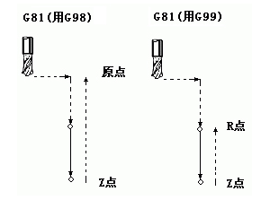 G81 命令可用于一般的孔加工。 |
| G 82 钻孔循环(G82) |
1. 格式 G82 X_Y_Z_R_P_F_K_; X_ Y:孔位数据 Z_:从R点到孔底的距离 R_:从初始位置到R点的距离 P_:在孔底的暂停时间 F_:切削进给速度 K_:重复次数 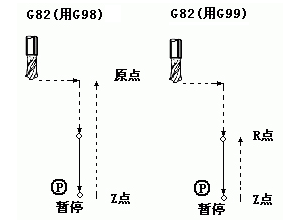 G82 钻孔循环,反镗孔循环
|
| G83 排屑钻空循环(G83) |
1. 格式 G83 X_Y_Z_R_Q_F_K_; X_ Y:孔位数据 Z_:从R点到孔底的距离 R_:从初始位置到R点的距离 Q_:每次切削进给的切削深度 F_:切削进给速度 K_:重复次数 2. 功能 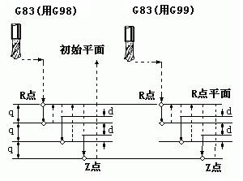 G83 中间进给 孔底 快速退刀。 |
| G84 攻牙循环(G84) |
1. 格式 G84 X_Y_Z_R_P_F_K_; X_ Y:孔位数据 Z_:从R点到孔底的距离 R_:从初始位置到R点的距离 P_:暂停时间 F_:切削进给速度 K_:重复次数 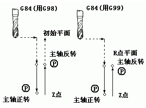 G84 进给 孔底 主轴反转 快速退刀。
|
| G85 镗孔循环(G85) |
1. 格式 G85 X_Y_Z_R_F_K_; X_ Y:孔位数据 Z_:从R点到孔底的距离 R_:从初始位置到R点的距离 F_:切削进给速度 K_:重复次数 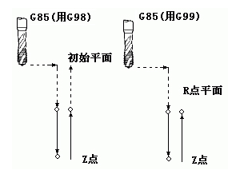 G85 中间进给 孔底 快速退刀。
|
| G86 定点钻孔循环(G86) |
1. 格式 G86 X_Y_Z_R_F_L_; X_ Y:孔位数据 Z_:从R点到孔底的距离 R_:从初始位置到R点的距离 F_:切削进给速度 K_:重复次数 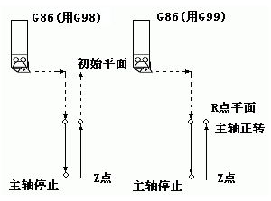 G86 进给 孔底 主轴停止 快速退刀。
|
| G87 反镗孔循环(G81) |
1. 格式 G87 X_Y_Z_R_Q_P_F_L_; X_ Y:孔位数据 Z_:从R点到孔底的距离 R_:从初始位置到R点的距离 Q_:刀具偏移量 P_:暂停时间 F_:切削进给速度 K_:重复次数 2. 功能 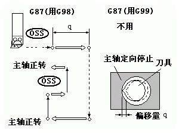 G87 进给 孔底 主轴正转 快速退刀。
|
| G88 定点钻孔循环(G88) |
1. 格式 G88 X_Y_Z_R_P_F_L_; X_ Y:孔位数据 Z_:从R点到孔底的距离 R_:从初始位置到R点的距离 P_:孔底的暂停时间 F_:切削进给速度 K_:重复次数 2. 功能 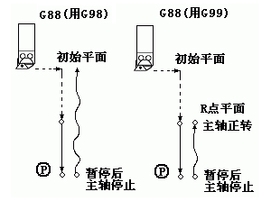 G88 进给 孔底 暂停, 主轴停止 快速退刀。
|
| G89 镗孔循环(G89) |
1. 格式 G89 X_Y_Z_R_P_F_L_; X_ Y:孔位数据 Z_:从R点到孔底的距离 R_:从初始位置到R点的距离 P_:孔底的停刀时间 F_:切削进给速度 K_:重复次数 2. 功能 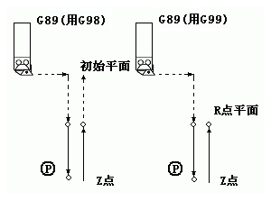 G89 进给 孔底 暂停 快速退刀。 |
| G90/G91 绝对命令/增量命令 (G90/G91) |
此命令设定指令中的 X, Y 和 Z 坐标是绝对值还是相对值，不论它们原来是绝对命令还是增量命令。含有 G90 命令的程序块和在它以后的程序块都由绝对命令赋值； 而带 G91 命令及其后的程序块都用增量命令赋值。 |